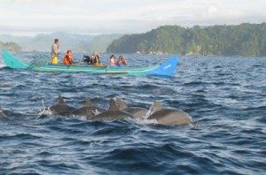
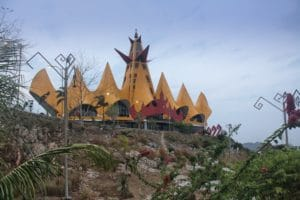

Travel Jakarta Lampung
Main Content

Tempat Wisata di Lampung

Taman Nasional ini begitu terkenal karena Gajahnya. Taman Nasional ini dapat ditempuh dengan 2 jam perjalanan dari kota Bandar Lampung.

Pantai ini dekat dengan kota Banda Lampung berjarak kurang lebih 20 KM. Disini kita dapat bersenang-senang di pantai ataupun hanya memanjakan mata karena pasinya yang begitu putih.

Teluk Kiluan memiliki suasana alam yang fantastis disini juga kita dapat menemukan lumba-lumba di laut lepas.

Menara siger adalah salah satu ikon Provinsi Lampung. Menara ini dibuat mirip dengan topi/mahkota tradisional Lampung.

Siapa yang tidak mengenal Gunung Krakatau? Gunung ini masuk kedalam Provinsi Lampung. Jarak yang tidak begitu jauh antara Jakarta - Lampung dengan gunung ini menjadikan gunung ini wajib dikunjungi jika Anda ingin Travel Jakarta Lampung.